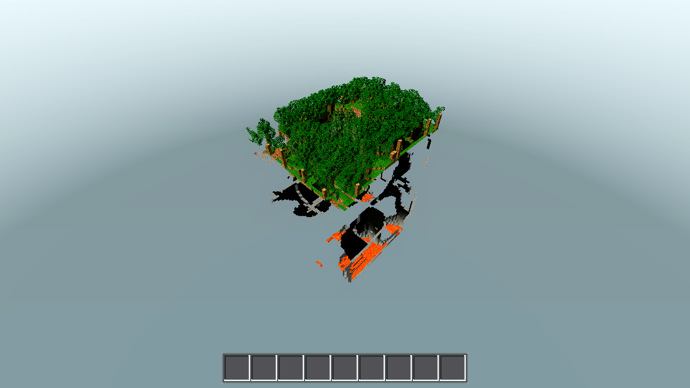
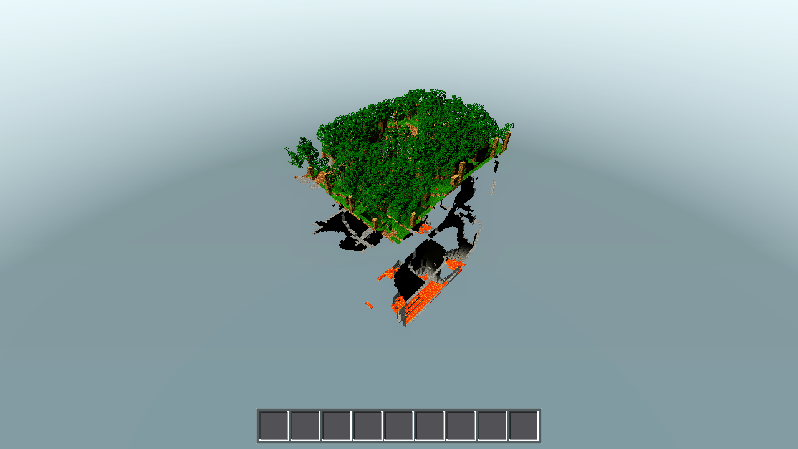
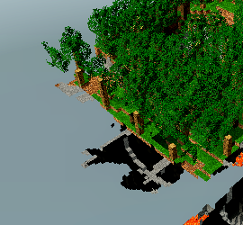
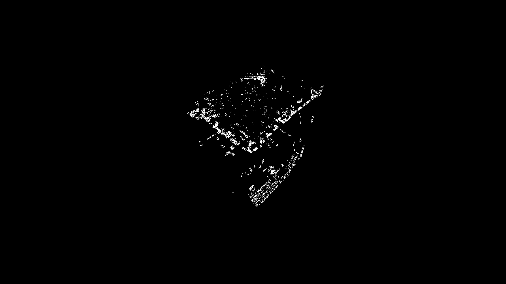

_merge_atlas() in godot/world/chunk.gd caches the runtime-extended 1024×1760 merge atlas in statics (_ms_tex/_ms_rects). The fresh-build path returned {"tex", "rects", "h": float(img2.get_height())} (chunk.gd:107) but the cache-hit path returned {"tex", "rects"} with no "h" key (chunk.gd:46-47). _emit_ro_merged reads ms_h = float(ms.get("h", Data.ATLAS_PX)) (chunk.gd:439), so every chunk built after the first one in the build queue (the d=0 spawn chunk gets the fresh-build dict; every other chunk hits the cache) divided its merged y-UVs by 1024 instead of the real texture height 1760 — a ×1.71875 y-scale error that pushed every merged quad's sampled row down into a foreign block's strip (stone → planks; log-side → snowgrass top/bottom = the user's "tree trunks show dirt"; grass → dirt/stone). Seed 44 (AC-0106's gate seed) is blind to the bug: at R=1 iso its only visible land is the spawn chunk, the one chunk with the correct "h".
diff --git a/godot/world/chunk.gd b/godot/world/chunk.gd
index 46b669d..df55434 100644
--- a/godot/world/chunk.gd
+++ b/godot/world/chunk.gd
@@ -44,7 +44,7 @@ static var _ms_rects := {}
func _merge_atlas() -> Dictionary:
if _ms_key == Data.atlas_tex:
- return {"tex": _ms_tex, "rects": _ms_rects}
+ return {"tex": _ms_tex, "rects": _ms_rects, "h": float(_ms_tex.get_image().get_height())}
_ms_key = Data.atlas_tex
_ms_tex = null
_ms_rects = {}
@@ -424,7 +424,7 @@ func _qwrite_merged(acc: Acc, fi: int, n: Vector3i, cva: Array, c0: Array, W: in
else:
cu = cv.x
cvv = 1.0 - cv.y
- acc.u[b + j] = (Vector2(tl) + Vector2(0.5 + cu * 31.0, 0.5 + cvv * 31.0)) / Data.ATLAS_PX
+ acc.u[b + j] = (Vector2(tl) + Vector2(0.5 + cu * 31.0, 0.5 + cvv * 31.0)) / Vector2(Data.ATLAS_PX, ms_h)
acc.i[ib] = b
acc.i[ib + 1] = b + 2
acc.i[ib + 2] = b + 1
Line 1 = the fix (plan §7: cache-hit return now mirrors the fresh-build branch; ImageTexture.get_image() returns the stored image, no re-decode, called once per chunk build). Line 2 = optional hardening, INCLUDED (see below). Nothing else touched — no comments added; unmerged _emit_faces, cutout (xtab), fluid (ktab), data.gd, assets, world gen all untouched.
| gate | requirement | measured | verdict |
|---|---|---|---|
| G0 | --headless --quit RC=0, zero script errors | RC=0, 0 SCRIPT ERROR lines (log: .scratch/AC-0117/g0.log) | PASS |
| G1 | genhash 25/25 byte-identical to AC-0106 baseline | 25 GENHASH lines; every (cx,cz) 16-hex prefix identical to .scratch/ac0106/genhash_baseline_44.log (baseline stores 16-hex prefixes; new run prints full 32-hex, all 25 prefixes match) | PASS |
| G2 (bug gate) | seed 16 A/B: no foreign-tile substitution; tree crops show wood; diff far below pre-fix 1.97% | diff>4 = 0.694%, diff>8 = 0.629% (pre-fix baseline 1.97% @>8); diff mask = fine speckle across merged surfaces, no solid blocks; trunk crops: log-side wood in ON, matches OFF; cliff edges: stone/sand speckle in ON, matches OFF | PASS |
| G3 | full battery RC=0, ok:true, known-stable values | RC=0, ok:true; sea 2730/2730 + 1406/1406, sea_stable true, torch_level 14, horizontal_moved 2.82, place_ok true, drop_spawned true, water_on_lava 25, sideways_lava 9 (all exact) | PASS |
| G4 | r4 sum of surface-0 (opaque) verts over all 81 chunks = 125552 exactly | 81/81 chunks built (all_meshed true), opaque vert sum = 125552 exactly (AC-0106 value; vertex win intact, −67.2% vs pre-AC-0106 383244) | PASS |
| G5 | only chunk.gd + task folder modified; no scratch outside .scratch/AC-0117/ | git status --short: M godot/world/chunk.gd + untracked tasks/AC-0117/ files only; all Run-2 scratch logs in .scratch/AC-0117/ | PASS |
ON = merge ON (default, the fixed path), OFF = AWECRAFT_MERGE=0 reference. Zoom crops at 3× in .scratch/AC-0117/ (left_tree_*, edge_row_*).
 |
 |
 |
repro_seed16_diffmask.png) showed solid whole-face color blocks across every non-spawn chunk (1.97% @>8); post-fix the residual is confined to intra-tile speckle on merged quads + the lava-lake animation frame.
Tree-crop verdict: no foreign-tile substitution anywhere. The pre-fix signature (white/brown snowgrass-top+bottom checker on trunks, tan planks on stone cliffs — see repro_seed16_crop_on.png) is gone; ON and OFF match tile-for-tile.
Measured residual 0.629% (diff>8) vs pre-fix 1.97% — ≈⅓ of the pre-fix value, and qualitatively different (speckle vs solid blocks). This is the AC-0106-shipped slope-31 strip sampling, not a regression: merged quads sample a 31px-per-cell span across 32px-pitch strip repeats, so a W×H quad shows up to (W−1)/(H−1)px of intra-tile pattern shift vs the per-block render (both arms sample the SAME tile; 1×1 quads are pixel-identical in both arms because both sample [0.5, 31.5] of the same tile). The residual therefore appears as fine speckle over grass/stone/wood surfaces with W>1 or H>1 groups, plus the animated lava lake (frame differs between the two render runs). Plan §7 documents this as out-of-scope: fixing it would require re-designing the strips (31px pitch bleeds across tile edges; per-block UVs kill the vertex win). No crop shows a clearly foreign tile, so the gate criterion ("no wrong-tile substitution") is met.
Included. The tile-bearing fallback branch in _qwrite_merged (chunk.gd:427 — blocks that have an atlas tile but no merge strip) divided its y-UV by Data.ATLAS_PX (1024) while emitting onto the 1024×1760 texture — the same latent bug class as the root cause. Changed the denominator to Vector2(Data.ATLAS_PX, ms_h) (1 token). The branch is currently unreachable (all 17 merge-eligible block ids have all three face tiles, so _merge_strip never fails — plan §4), so behavior is byte-identical today: genhash 25/25, battery exact, and the 125552 vert count confirm it. It makes the fallback correct if the blocks table ever gains a strip-less textured block.
AWECRAFT_LOGIC=meshdump is not a real logic mode — the unknown-logic fallback (main.gd:965) prints MINFO before meshes settle (all 121 entries built:false, no verts). Used AWECRAFT_LOGIC=perf instead: its _perf_test waits until every chunk in render radius is built (all_meshed:true, 81/81) and then prints the same world.mesh_info() MINFO entries (main.gd:4637-4639). Same data source, authoritative built state.AWECRAFT_NO_FOG=1 (plan §6 command) to match Run-1's measurement conditions. Final PNGs are the NO_FOG pair.HOME=/… must be passed via env to xvfb-run (a bare xvfb-run -a VAR=… cmd fails with RC=127 "not found").Logs: .scratch/AC-0117/ — g0.log, g1_genhash.log, g2_on/off.log, g3_battery.log, g4_perf.log (+ g4_meshdump.log first attempt), zoom crops. Pre-fix evidence: repro_*.png in this folder (Run-1). No git, no builds — coordinator commits.